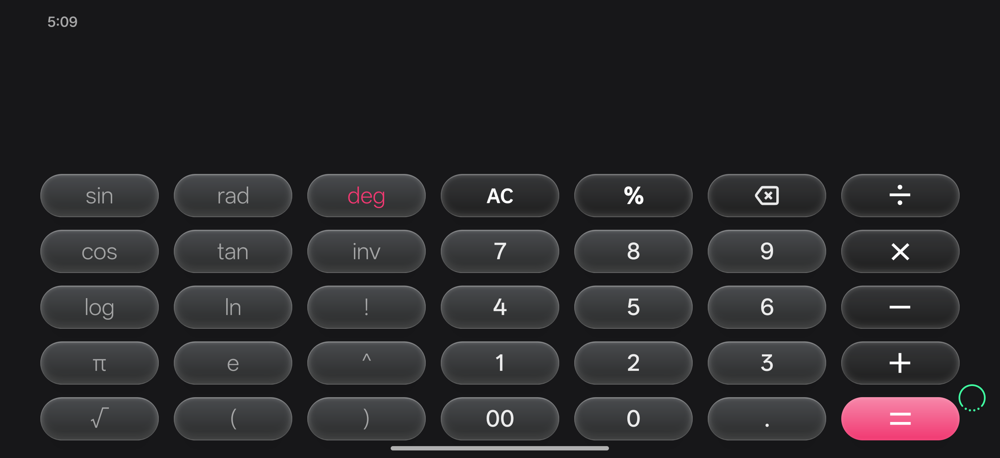
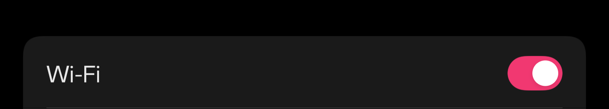
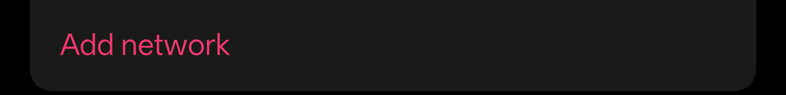

Read it top to bottom the first time: each phase feeds the next. Everything here is also checkable — the last section has the exact commands to reproduce it.
If you remember one thing from this page, make it this one.
Apps do not hard-code their colours. A key that should be “the accent colour” is written as a
reference — something like ?attr/couiColorPrimary. In plain English that reference says:
“Paint me in whatever the accent colour is at the moment. I do not know what it is.”
Something in the system has to answer that question. OxygenOS has two ways of filling in the answer:
| You pick… | What the OEM writes | Result |
|---|---|---|
| a Featured colour (a preset from the list) | a complete, real palette | everything tints correctly |
| a Custom colour (built from your wallpaper) | a stub whose accent slot is literally #FFFFFFFF — pure white |
white = key, white toggles, white Wi‑Fi icon |
The phone is not failing to tint. It is tinting white because that is the answer it was given. So the fix is to correct the answer, not to repaint widgets one by one.

= key and the little deg label use the pink accent.

The one-sentence version.
Three system files hold the answer sheet the OEM forgot to fill in; the fix writes the user's colour into them, once, as root — and it can put the originals back at any time.
Seven phases. Each one takes the previous phase's output, produces something new, and must pass a gate before the next phase may start. This is why the method is called a waterfall: the work flows downwards and, in the classic version, never back up.
The honest footnote about waterfall.
Real debugging is never a clean cascade: this fix went 2 → 4 → back to 2 twice before it worked. The chapters below still follow the waterfall order, because that is the easiest way to explain why each step exists — but every “backflow” box marks a place where the theory had to be revised. Those boxes are the most educational part of the document.
Phase output: a checklist. Not “make the accent work”, which cannot be tested, but six statements a stranger could verify on the phone in five minutes.
| # | Requirement | How it is checked |
|---|---|---|
| 1 | The chosen Custom accent appears on every surface that uses the accent reference — not just the obvious one. | Calculator's =, its deg label, Wi‑Fi's toggle, its “Add network” link, its connected‑network icon, and Settings' ON toggles all show the accent. |
| 2 | Featured presets are never touched. The OEM's own path keeps ownership of it. | Pick a preset ⇒ the OEM value is back, byte for byte. |
| 3 | Fully reversible. No state that only a factory reset can undo. | The original files are copied aside first and restored on demand. |
| 4 | No new overlays. The previous attempt needed one per broken widget — unbounded work. | cmd overlay list shows nothing of ours in play. |
| 5 | No special app scope. Whatever runs must not need a new LSPosed scope or a per‑app hook. | The work happens in one process (the app itself) with su. |
| 6 | Survives normal use — light/dark switching, reboots, picking a new colour. | Night file written too; the fix re‑applies when the colour changes. |
Why writing requirements first actually mattered here.
Criterion 2 (never touch Featured) and criterion 3 (reversible) are the reason the final implementation keeps a backup of the OEM's original files. Without them on paper, the tempting shortcut — “just write our colour and be done” — would have left a phone that could never return to stock.
Phase output: the actual mechanism, proven by measurement. Here guesses are cheap and truth is expensive, so the rule is: one theory at a time, each falsifiable by a single command.
None of this is OxygenOS-specific; it is how Android resources have worked for years.
| Word | What it means | Analogy |
|---|---|---|
| Resource | Colours, strings, sizes and images are compiled into the APK under a name, e.g.
color/coui_color_primary_blue. The app asks for the name, never for a number. |
A labelled drawer in a kitchen. |
Theme attribute (?attr/…) |
A value meaning “ask the current theme”. ?attr/couiColorPrimary is not a colour, it is
a question. Any number of drawers may hold the answer “whatever the theme says”. |
A note on the drawer: “use today's house colour”. |
| Overlay / RRO | A Runtime Resource Overlay replaces resource values of another app without touching its APK. Android ships them itself, e.g. for SystemUI's accent. | A sticker pasted over one drawer's contents. |
| uxres store | The Oplus-specific piece: a plain XML file on the device, written by the OEM's theme engine and read by its apps for the “Coui” colour family. | The house's own palette sheet, pinned to the wall. |
The distinction that decides the whole design.
An overlay replaces a drawer's contents. The uxres store is the sheet the answers are copied from. Repainting widgets means editing hundreds of drawers; editing the sheet changes every copy at once.
The state lives in one secure setting, theme_customization_overlay_packages, a small JSON
blob. This is the user's real value on the Custom path:
$ adb shell settings get secure theme_customization_overlay_packages {"_applied_timestamp":1789205191660,"android.theme.customization.theme_style":"VIBRANT", "android.theme.customization.color_source":"home_wallpaper", "material_you_overlay_enable":1, "android.theme.customization.color_index":0, "android.theme.customization.system_palette":"FFF13871", "android.theme.customization.accent_color":"FFF13871"}
Two fields carry the rest of the story:
color_source — where the colour came from. home_wallpaper,
lock_wallpaper, photo and custom_image mean “Custom”. Anything else
means the user picked a Featured preset. This single field is the fork between the two code paths.accent_color (falling back to system_palette) — the colour itself, here
FFF13871, the pink used throughout this document.Still phase 2. The theme engine keeps its working files in one directory; listing it as root was the turning point.
# ls -la /data/oplus/uxres/uxcolor -rw-r--r-- 1 root root 6093 coui_theme_color_wallpaper.xml ← Featured: a full palette -rw-r--r-- 1 root root 6093 coui_theme_color_wallpaper_night.xml -rw-r--r-- 1 root root 805 ux_custom_color.xml ← Custom: the stub -rw-r--r-- 1 root root 805 ux_custom_color_night.xml
That size difference is the bug: the 6 KB file holds a real palette, the 805-byte one holds placeholders. Inside the small file:
# cat /data/oplus/uxres/uxcolor/ux_custom_color.xml <?xml version="1.0" encoding="UTF-8" standalone="yes" ?> <resources> <color name="couiSingleFirstNormal">#FFFFFFFF</color> ← the accent slot: white <color name="couiSingleFirstPressed">#FFBB2B58</color> … ten more lines … </resources>
Why this is the right theory.
couiSingleFirstNormal is white and the visible surfaces are white. Changing that one
value must move every surface at once. Unlike the earlier theories, this one makes a cheap, falsifiable
prediction: write one file, restart one app, look at the screen.
The prediction was tested with the raw = key of Calculator: a cyan accent written into the
slot came back as a cyan = with zero overlays enabled. Then the user's real pink
was written and Calculator's = and its deg label, the Wi‑Fi toggle, the
“Add network” link and the connected‑network icon all became pink.
These are kept in the document on purpose. Knowing what has already been disproved is worth more than knowing what worked.
Theory 1 — “override the palette colour behind the accent reference”. Rejected.
The reference ?attr/couiColorPrimary resolves through a colour resource such as
coui_color_primary_blue. So: fabricate an overlay on that resource and the key must tint.
# cmd overlay fabricate --target com.oneplus.calculator --name funTest \ com.oneplus.calculator:color/coui_color_primary_blue 0x1c 0xffff00ff # cmd overlay lookup com.oneplus.calculator com.oneplus.calculator:color/coui_color_primary_blue #ffff00ff ← the overlay really is live…
…and the = key stayed white. The app never reads that colour; it asks for
the attribute, and the attribute is answered elsewhere. Theory dead.
Theory 2 — “patch each broken widget”. Rejected after it shipped once.
The previous attempt (commit b26b8ce) fabricated one overlay per broken surface:
fold_button_equals_bg_color, switch_outer_circle_color, and so on. It worked for
the surfaces that were known — and silently missed the deg label and anything else nobody had
photographed yet. That is whack‑a‑mole: the work is unbounded because the list of surfaces is unknowable
without opening every screen of every app. It was replaced by the palette fix and the old overlays are now
switched off.
A near miss worth naming: sysui_type_accent_color.
The Custom path also leaves this SystemUI setting white, and writing it does tint SystemUI's own accent (QS tiles). It is real, but it is only SystemUI — the toggles and the Calculator key never moved for it. It is kept as a small companion hook, explicitly not the fix.
Phase output: a decision that is boring on purpose. The clever part of this fix is how little it does: it writes one family of values and keeps a photocopy of what was there before.
The store is device-global and the apps read it at start-up. Writing it once fixes every consumer of the accent reference — including apps nobody has thought of. This is requirement 1 and requirement 4 satisfied by a single choice.
The file does not hold “a colour”, it holds a small family of roles: the accent, its pressed state, a faint version for highlights, and so on. Every OEM stub keeps that shape, so the fix derives the whole family from the one colour the user picked, using the OEM's own relationships.
| Slot | Role | Derived from the user's accent |
|---|---|---|
couiSingleFirstNormal | the accent itself | exactly the picked colour |
couiSingleFirstPressed | accent while pressed / darker | the accent scaled down (see maths below) |
couiSingleFirstLightNormal | faint accent (fills, subtle chips) | accent at 30 % alpha by day, 40 % at night |
couiSingleFirstLightPressed | faint pressed accent | pressed accent at 30 % alpha |
couiSingleFirstTextHighLight | text highlight | accent at 15 % alpha |
couiSingleFirstBarDisabledColor | disabled track/bar | accent at 15 % alpha |
Each of those six is written twice: once as itself and once with the OEM's NXcolor prefix,
exactly as the OEM's own files do it. Twelve <color> lines per file, two files
(day and night).
Why “same shape as the OEM” is a design rule and not a detail.
The file is parsed by a resource loader we do not control. If the shape changes — an extra attribute, a missing slot, a trailing newline, different permissions — the loader may ignore the file or fail silently. So the design copies the OEM's shape exactly, and a unit test locks it in (phase 5).
Still phase 3. Three details decide whether the fix feels native or feels broken, and whether the phone can always be put back.
A pressed state is not a hard-coded second colour; it is the accent darkened a little. Comparing the OEM's
own Featured palette — #FF848DC8 normal and #FF5662B3 pressed — gives the ratio
(≈ 0.80). The implementation uses a slightly gentler pair, and the difference between day and night is
deliberate, because a night‑mode surface is already dark:
fun shade(argb: Int, factor: Double): Int { // scale R, G and B toward black, keep the alpha channel untouched val a = (argb ushr 24) and 0xFF fun channel(shift: Int) = (((argb ushr shift) and 0xFF) * factor) .toInt().coerceIn(0, 255) return (a shl 24) or (channel(16) shl 16) or (channel(8) shl 8) or channel(0) } // the two factors, and the four alphas the OEM's own stub uses const val DAY_PRESSED_FACTOR = 0.78 const val NIGHT_PRESSED_FACTOR = 0.88 const val DAY_LIGHT_NORMAL_ALPHA = 0x4C // 30 % — `#4CFFFFFF` in the stub const val NIGHT_LIGHT_NORMAL_ALPHA = 0x66 // 40 % — `#66FFFFFF` const val LIGHT_PRESSED_ALPHA = 0x4C const val HIGHLIGHT_ALPHA = 0x26 // 15 % — TextHighLight + BarDisabled
Why the OEM's stub is the spec.
The white placeholder file is still a complete example: it tells you how many slots exist, in what order, and which alpha each one uses. Reading the stub as documentation is what keeps the output plausible in every app instead of merely visible in one.
| Invariant | How the design guarantees it |
|---|---|
| Featured presets keep working | The Custom path is detected from color_source.
Anything else ⇒ the fix does nothing but put the OEM files back. |
| The originals can always be restored | First write copies both files aside
(/data/local/tmp/ae_uxcolor_stock) and drops a marker so a later run can never overwrite the
backup with our own output. |
| No half-written file | The XML is generated in the app's cache, copied into place as root, then the file's MD5 is compared with the locally computed one. A mismatch is reported, not ignored. |
| Same shape and ownership as stock | root:root, mode 644,
805 bytes for a 6‑slot family, no trailing newline. |
| Nothing happens twice by accident | Every step is idempotent: the last published accent is remembered, so re-applying the same colour skips the app restarts entirely. |
Resources are read when a process starts. A running app therefore keeps the colour it read at launch, so the fix has to do two things when the palette changes:
pidof
first, so on a cold phone this costs nothing. SystemUI is restarted rather than killed, and init brings it
straight back.Phase output: code that turns the design into six steps, each one individually verifiable.
| File | Responsibility | Why separated |
|---|---|---|
CouiPalette.kt |
The maths: colour parsing, the pressed shade, the four alphas, the twelve slot names, the XML text. | No Android, no root, no I/O — so it runs in a plain JVM unit test in milliseconds. |
CouiAccentFix.kt |
The plumbing: read the setting as root, call the palette, back up, write, verify, restart, re-apply on change, restore on demand. | Everything that can fail is here, wrapped so a failure leaves stock behaviour intact. |
The file lives in a root-owned directory and the overlay manager only accepts root or shell. The app
process has su (granted once by the user through the root manager); SystemUI's process does not
reliably have it on the PATH. Running privileged work from the app is also the only way to
restart SystemUI without a process killing itself mid-command — exactly the same reasoning as the existing
RootShell.restartSystemUi() helper.
The uncomfortable part of the design, stated plainly.
This fix needs root, and it edits files that the OEM's theme engine owns. Both are real risks, which is
why the fix refuses to do anything without a Custom colour, refuses to run on Featured, and always keeps a
restore path. One preference (system_color_fix_enabled) turns the whole thing off again and puts
the OEM's files back.
Still phase 4 — the pieces of code that do the actual work, in the order they run.
private fun customAccent(): String? = try { // read through `su`: this is a Secure setting an app may not read directly val res = RootShell.exec("settings get secure $KEY_THEME_OVERLAY", QUICK_TIMEOUT_S) if (!res.ok) return null val raw = res.output.trim() if (raw.isEmpty() || raw == "null") return null val json = JSONObject(raw) CouiPalette.customAccent( // ← the shared rules source = json.optString("android.theme.customization.color_source", ""), accentColor = json.optString("android.theme.customization.accent_color", ""), systemPalette = json.optString("android.theme.customization.system_palette", "") ) } catch (t: Throwable) { null }
That one call is the whole “is this a Custom colour, and is it a real colour?” decision — the same code is
used by the SystemUI companion, so the two can never disagree. null means hands off: the
caller then restores the OEM's files and stops.
fun slots(night: Boolean, accent: Int): LinkedHashMap<String, Int> { val normal = accent or 0xFF000000.toInt() // force opaque val pressed = shade(normal, if (night) NIGHT_PRESSED_FACTOR else DAY_PRESSED_FACTOR) val lightAlpha = if (night) NIGHT_LIGHT_NORMAL_ALPHA else DAY_LIGHT_NORMAL_ALPHA val values = LinkedHashMap<String, Int>() for (name in BASE_SLOTS) values[name] = when (name) { "couiSingleFirstNormal" -> normal "couiSingleFirstPressed" -> pressed "couiSingleFirstLightNormal" -> withAlpha(normal, lightAlpha) "couiSingleFirstLightPressed" -> withAlpha(pressed, LIGHT_PRESSED_ALPHA) else -> withAlpha(normal, HIGHLIGHT_ALPHA) // text + disabled bar } // the OEM duplicates every slot with an `NXcolor` prefix — value for value for ((name, value) in values.toList()) values[nx(name)] = value return values }
The result, for pink #FFF13871 in the day store — real content from the phone:
<?xml version="1.0" encoding="UTF-8" standalone="yes" ?> <resources> <color name="couiSingleFirstNormal">#FFF13871</color> <color name="couiSingleFirstPressed">#FFBB2B58</color> <color name="couiSingleFirstLightNormal">#4CF13871</color> <color name="couiSingleFirstLightPressed">#4CBB2B58</color> <color name="couiSingleFirstTextHighLight">#26F13871</color> <color name="couiSingleFirstBarDisabledColor">#26F13871</color> … the same six again, prefixed NXcolor … </resources>
805 bytes, no trailing newline, exactly the OEM's shape. In the night store the pressed shade is lighter
than in the day store (#FFD43163 instead of #FFBB2B58) and the faint accent is
stronger, because a dark surface needs more colour to read.
Still phase 4. Everything above this line is arithmetic; everything below touches files that belong to the OEM, so it is written defensively.
val res = RootShell.exec( "[ -f $STOCK_MARK ] || { mkdir -p $STOCK_DIR; " + "cp -f $STORE_DIR/$DAY_FILE $STOCK_DIR/; " + "cp -f $STORE_DIR/$NIGHT_FILE $STOCK_DIR/; " + "chmod 644 $STOCK_DIR/$DAY_FILE $STOCK_DIR/$NIGHT_FILE; " + "touch $STOCK_MARK; }; echo ok", QUICK_TIMEOUT_S )
The [ -f $STOCK_MARK ] || guard is the important half: the backup runs only if the marker file
does not exist yet. Without it, a second run would “back up” the file we had already overwritten — and the
original would be gone forever.
// generated in the app's cache first: no shell-quoting minefield around < " and # val res = RootShell.exec( "cp -f ${day.absolutePath} $STORE_DIR/$DAY_FILE; " + "cp -f ${night.absolutePath} $STORE_DIR/$NIGHT_FILE; " + "chmod 644 $STORE_DIR/$DAY_FILE $STORE_DIR/$NIGHT_FILE; " + "chown root:root $STORE_DIR/$DAY_FILE $STORE_DIR/$NIGHT_FILE; " + "md5sum $STORE_DIR/$DAY_FILE $STORE_DIR/$NIGHT_FILE", ROOT_TIMEOUT_S ) val out = res.output.lowercase(Locale.US) val dayOk = out.contains(md5(dayXml)) // our own MD5 of the text we generated val nightOk = out.contains(md5(nightXml)) res.ok && dayOk && nightOk // a silent half-write counts as a failure
Three separate protections: the MD5 catches a truncated write, chmod/chown keep
the file exactly as the OEM left it (root-owned, 644), and doing everything in one root shell
means there is no window in which the file exists with the wrong owner or half the content.
val cmd = "for p in $list; do " + "if pidof \$p >/dev/null 2>&1; then am force-stop \$p && echo \$p; fi; done" RootShell.exec(cmd, ROOT_TIMEOUT_S) RootShell.restartSystemUi() // SIGTERM, not -9: init brings it straight back
The pidof guard is what keeps this cheap and quiet: on a freshly booted phone nobody is
running, the loop does nothing, and the palette is simply read when each app next starts. The candidate list is
curated (settings, Wi‑Fi, files, calculator, clock, gallery, weather, phone, Bluetooth …) rather than
“everything”, so a colour change never turns into a phone reboot.
app.contentResolver.registerContentObserver( Settings.Secure.getUriFor(KEY_THEME_OVERLAY), false, observer) app.contentResolver.registerContentObserver( Settings.System.getUriFor(KEY_COLOR_THEME_SETTING), false, observer) // one debounce for every trigger: a single user action fires several callbacks private fun trigger(ctx: Context, reason: String) { val now = System.currentTimeMillis() if (now - lastRunAt < 1500L) return lastRunAt = now Thread { apply(ctx, force = reason == "toggle") }.start() }
The build before this one left aeCoui_* overlays registered on the device. Disabling them is
still supported — but only once, remembered in a marker, because after the first sweep there
is nothing left to find and a root cmd overlay list on every app start would be pure cost:
private fun clearLegacyOverlays(ctx: Context) { if (state(ctx).getBoolean(PREF_LEGACY_SWEPT, false)) return val listed = RootShell.exec("cmd overlay list --user 0", QUICK_TIMEOUT_S) if (!listed.ok) return // … disable every com.android.shell:aeCoui_* entry … state(ctx).edit().putBoolean(PREF_LEGACY_SWEPT, true).apply() }
Phase output: evidence. Two layers, because they fail in different ways: unit tests catch wrong arithmetic instantly, and only a phone can tell you whether the OEM's resource loader agrees with you.
The palette maths has no Android, no root and no file system in it, so it can be tested in a plain JVM unit test. That matters because the generated XML is a contract with a parser we do not control: if the shape drifts, the loader may ignore the file without saying a word. Ten tests pin it down:
| Test | What it guarantees |
|---|---|
| parse accepts 6- and 8-digit hex | The theme JSON is inconsistent about #, case and alpha — all four spellings must land on the same colour. |
| parse rejects non-colours | null, #12345 and #gggggg never become a colour, so a broken setting can never be written into the store. |
| normal slot + NX twin | Twelve slots, six of them NXcolor-prefixed, exactly as the OEM writes them. |
| light & highlight alphas | 4C / 4C / 26 by day, 66 at night — and the RGB stays the user's colour. |
| pressed is a darker shade | Every channel drops, the alpha stays opaque, and the day store is shaded harder than the night store. |
| XML shape | Header line, <resources>, fifteen lines, matching close tag, no trailing newline. |
| shade clamping | Brightening cannot overflow a channel, and the alpha survives. |
| format is locale-independent | On an Arabic-locale device the hex digits must still be Latin — this is why everything formats with Locale.US. |
| customAccent rules | Only the four wallpaper color_source values pass; the white stub, the transparent placeholder and garbage all come back as “hands off”. |
| isBlankAccent | “Missing”, #ffffffff and 00000000 all count as the broken signature, in any case and with or without padding. |
@Test fun `xml matches the OEM stub shape and has no trailing newline`() { val xml = CouiPalette.xml(night = false, accent = pink) val lines = xml.split("\n") assertEquals("<?xml version=\"1.0\" encoding=\"UTF-8\" standalone=\"yes\" ?>", lines.first()) assertEquals("<resources>", lines[1]) assertEquals("</resources>", lines.last()) assertEquals(15, lines.size) // header + open + 12 + close assertTrue(xml.contains("<color name=\"couiSingleFirstNormal\">#FFF13871</color>")) assertTrue(!xml.endsWith("\n")) }
Running the suite is one command and takes seconds. The fix shipped with 73 passing tests (the project's 63 existing ones plus the 10 above).
$ gradlew.bat testDebugUnitTest > Task :app:testDebugUnitTest BUILD SUCCESSFUL
A test that earned its keep immediately.
Two of these tests were added while tidying up the code, and one of them failed on the first run: the author expected the accent to be normalised to six digits, and the code correctly kept the eight-digit form it was given. The test was wrong, the code was right — which is exactly the argument for writing the expectation down before believing your own memory.
Still phase 5. Everything here is evidence a sceptic could re-check, because the most dangerous moment in debugging is a “successful” test that measured the wrong thing.
The store sits behind root-only permissions, and adb shell on this device is not
root. The app, however, holds root — so the harness runs the other way around: a debug-only broadcast receiver
(never present in release builds) executes a fixed script as root and leaves its report where adb
can read it.
// 1. push a script (LF line endings!) and trigger it from the host $ adb push ae_verify.sh /data/local/tmp/ae_audit.sh $ adb shell am broadcast -a io.github.kvmy666.autoexpand.RUN_AUDIT \ -n io.github.kvmy666.autoexpand/.DebugPrefReceiver // 2. the report is world-readable, so adb can read it back $ adb shell cat /data/local/tmp/ae_verify.txt
The script only ever reads: it lists the store directory, prints the day file, counts the enabled overlays and tails the relevant log lines. Its path is a hard-coded literal — a debug receiver that ran arbitrary root commands straight from an intent would be a security hole even in a debug build.
| Check | Observed |
|---|---|
| Store content | #FFF13871 / #FFBB2B58 / #4CF13871 / #26F13871 plus the six NXcolor twins; night store #FFD43163 / #66F13871. |
| File metadata | 805 bytes, root:root, mode 644 — the OEM stub's exact shape. |
| Overlays in play | every aeCoui_* entry reads [ ] (disabled): the fix is the file, not an overlay. |
| Calculator | = key pink and the deg label pink. |
| Wi‑Fi | ON toggle, “Refresh”, “Add network” and the connected‑network icon all pink. |
| The user's own colour | Restored to the exact original value after testing — the accent settings JSON was checked character for character. |
The claim “no reboot needed” was tested by changing the accent while the app was alive and watching the logs. The result was more interesting than expected:
DIAG: CouiAccent re-apply (theme setting) ← the observer fired ✓ DIAG: CouiAccent write day=true night=true (d43e87acdf997a8d…) ← a real write DIAG: CouiAccent re-applied #fff13871 (palette already current) ← reading the newest value
Read that sequence carefully: the notification arrived seconds after two writes had already happened, and it carried the value that was current by then, not the value that triggered it — the settings provider coalesces rapid changes. That is harmless here for a specific design reason: the apply is idempotent and always publishes whatever it reads, so a late notification can only re-publish the newest state, and an unchanged state skips the app restarts. Had the code applied the value carried in the intent instead, a late notification would have written a stale colour.
Still phase 5. Each of these produced a confident, wrong answer before it was caught, which makes them the most valuable pages in this document.
Trap 1 — the harness re-applied the fix while the test was running.
Colour tests are run by triggering the app. Starting the app runs the fix. The earlier build would
re-enable its overlays while the test was busy disabling them — so a screenshot taken seconds later showed
the old fix working, and it looked like a brand-new discovery. The rule that came out of it:
switch the fix off, confirm every overlay reads [ ], and only then start measuring.
Trap 2 — the wrong process, again and again.
The Wi‑Fi screen belongs to com.oplus.wirelesssettings, not
com.android.settings. Restart the wrong package, see no change, and you have learned nothing
about the fix. Most “failed” colour tests in this project were really tests of the wrong process.
Trap 3 — a script with Windows line endings that silently does nothing.
Pushing a .sh file written on Windows gives sh something it cannot parse: the
script “runs”, the output file stays at 0 bytes, and it looks like a root permission problem. Convert to LF
before pushing. (A cousin of this trap: overlay commands must not have their stdout redirected to a file —
they ship data over a file descriptor and fail with a transaction error.)
And the honest list of what was not verified.
Phase output: an installed build with an off switch, and a rollback that does not depend on remembering anything.
| Path | What it does |
|---|---|
| Turn the toggle off | The OEM's stub files are copied back verbatim from the backup and the remembered accent is cleared — the next enable always restarts the apps, so the change is visible. |
| Pick a Featured preset in OxygenOS Settings | The next apply sees a non-Custom color_source, restores the stubs and steps aside. The OEM's own path then owns the accent again. |
| Uninstall the app | The last written palette stays in place (nothing else depends on the app), and the stock files remain in /data/local/tmp/ae_uxcolor_stock for a manual copy back. |
Why “reversible” was worth the extra code.
A fix that writes to an OEM-owned file is only acceptable because the original is one cp away.
The backup cost about fifteen lines of shell and one marker file; without it, the honest engineering decision
would have been not to ship at all.
Phase output: a fix that can be trusted for a while, plus the list of things nobody should try again.
| Situation | What happens |
|---|---|
| Light ↔ dark switching | Both stores are written, so the system picks the right one itself. Nothing to re-apply. |
| Reboot | The store lives in /data, so it survives. The app re-applies at start anyway (idempotent), and the restart step does nothing on a cold phone. |
| Picking a new Custom colour | The observer fires, the palette is rewritten, and the running consumers are restarted — no reboot, no manual relaunch. |
| Picking a Featured colour | The fix restores the OEM's stub files and stops; the OEM's own path paints the accent. |
| The OEM rewrites the store itself | Not observed for the Custom path (its engine writes the stub, not our values). If it ever does, the next apply fixes it — the trigger does not need a colour change. |
| A future OxygenOS changes the format | The write fails its own MD5 check; the code logs it and leaves stock behaviour rather than writing something it cannot verify. |
| Idea | Why it fails, or why it is not needed |
|---|---|
Overlay on the colour behind couiColorPrimary | The overlay is provably live and the widget still renders white — the app asks the attribute, not that colour. |
| Reading per-app OEM theme overlays | There are none on this device; the overlay list holds only display, navbar and fingerprint entries. |
| One overlay per broken widget | Unbounded work, and it silently misses surfaces nobody photographed (the deg label). |
sysui_type_accent_color as the fix | SystemUI only. Kept as a small companion, explicitly not the mechanism. |
Launcher icon folder /data/oplus/uxicons | That is icon artwork (day/mono PNGs), not the accent channel. |
docs/system-color-fix.md — the mechanism, the evidence, and how to verify it.docs/system-color-fix-PROGRESS.md — the lab notebook: every hypothesis, including the
disproved ones, in the order they were tested.The tidy-up afterwards is part of the work.
Once the mechanism was understood, code that only made sense under the old theories was removed: the migration that disables the old per-slot overlays now runs exactly once instead of on every app start, the duplicated “is this a Custom colour?” parsing in the app and in the SystemUI hook was replaced by one shared unit-tested function, and two comments still describing the abandoned overlay approach were corrected. No behaviour changed — and, as the tests proved, one of the “obvious” tidies was wrong and the tests were right.
Every term used above, one sentence each.
?attr/…)= key.Settings.SecuresuThe same checks that were used to accept the fix. Root and a Custom colour are assumed; on a Featured preset the correct answer is “no changes anywhere”.
# 1 · what colour does the theme say is active? (this is the fix's input) $ adb shell settings get secure theme_customization_overlay_packages # 2 · what ended up in the store? (root-only → ask the app's harness to read it) $ adb shell am broadcast -a io.github.kvmy666.autoexpand.RUN_AUDIT \ -n io.github.kvmy666.autoexpand/.DebugPrefReceiver $ adb shell cat /data/local/tmp/ae_verify.txt # 3 · is anything of ours overlaying resources? (expect: nothing, or all [ ]) $ adb shell cmd overlay list --user 0 | findstr /i aecoui $ adb shell cmd overlay list --user 0 | findstr /i funtest # 4 · what did the fix decide, in its own words? $ adb logcat -d -s Snapper:D | findstr /i couiaccent
couiSingleFirstNormal equal to your colour —
with root:root, mode 644 and 805 bytes.[ ] lines): the fix is a file, not an overlay.applied …; restarted N app(s) after a colour change, or
re-applied … (palette already current) when nothing changed.Reproducing the whole investigation.
docs/system-color-fix-PROGRESS.md keeps the raw trail: the commands, their output and the
hypotheses that died along the way — including the two that each cost a debugging cycle.
Waterfall on paper — this is what really happened, in order.
b26b8ce: one overlay per broken widget. It works where someone looked, and misses the deg label./data/oplus/uxres/uxcolor — a 6 KB real palette sitting next to an 805‑byte white stub.= key with no overlays enabled at all.111acb3: CouiPalette + CouiAccentFix, with backup, MD5 verification, restarts and the observer.#F13871 on the Calculator, Wi‑Fi and Settings surfaces; the original accent restored afterwards, character for character.If you take one habit away from this page.
The expensive part of fixing a bug is not writing the fix; it is proving which theory is true. The two working hours that went into refuting the first two theories bought the fact that the third one was designed correctly the first time — and the same discipline is what kept the phone recoverable at every step.